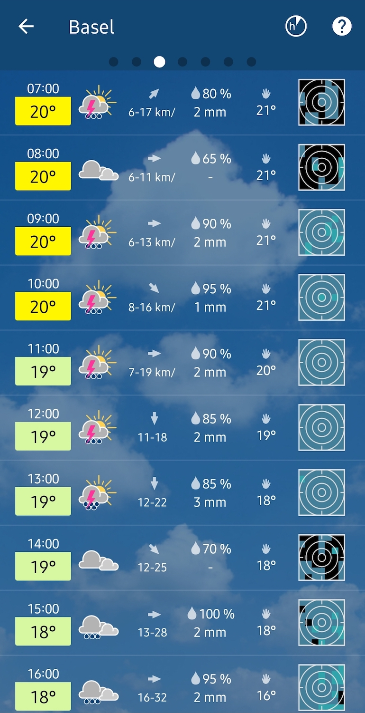
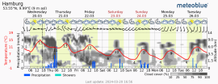

第一次用 meteoblue？这五分钟带你从完全不懂到顺手查天气
零基础也能跟上的 meteoblue 入门：它到底能干嘛、怎么装、三个一上手就有用的小功能，以及新手最常问的三个问题。
这篇能带你从完全不懂到用起来——不需要任何天气软件基础，跟着做就行。
它到底是干嘛的？给你一个生活化类比
你手机上可能已经装了一两个天气 App，但 meteoblue官网 和它们不太一样。如果说普通天气 App 是"天气预报员告诉你今天下雨"，那 meteoblue 更像是"把整个气象台的雷达、卫星、风场数据直接摊在你面前，让你自己看清楚雨从哪来、什么时候到"。
它本质上是一个专业级天气可视化工具——把气象模式数据和观测数据做成了能翻、能拖、能播放的动态图表。你不需要看得懂所有专业变量，但哪怕只用最基础的那几个功能，也比只看一行"今日小雨"靠谱得多。

五分钟上手：从下载安装到第一次跑通
别担心，整个过程真的只用五分钟。
第一步：下载安装。 安装包从官方下载拿就行，装好打开会让你授权定位——同意，这是为了给你显示当前位置的天气。首次打开会默认进入主屏，显示你所在地区的逐小时预报卡片。
第二步：改一下单位（强烈建议）。 默认单位是欧陆习惯的摄氏度和公里/小时，如果你平时看华氏度或者节（航海/航空用），现在就去设置里改。入口很好找，主屏左上角那个菜单图标点开就能看到设置选项。风速支持五档可选：公里/小时、米/秒、英里/小时、节、蒲福风级——觉得"几级风能不能出海"不好判断的朋友，直接选蒲福风级，图表里的风速条会变成 0 到 12 级的等级显示。

第三步：确认位置。 主屏右上角有个定位图标，点一下确保它锁定在你想看的城市。如果你常出差，可以在设置里加多个城市，主屏会自动轮换。
好了，这就是完整的上手流程。五分钟到点，你现在已经能用它查天气了。
上手后先玩这三个功能
装好别急着卸载——这三个功能是新手最值得先碰的，每一个都能让你"哦原来还能这么看"。
功能一：长按看术语解释
在主屏或者任意图表上，对着湿度、露点、可预报度这些你可能看不懂的词长按一下，就会弹出一个小气泡，直接给你讲清楚这个变量是什么意思、数值代表什么。
第一次发现这个功能的时候我挺惊讶的——大部分天气 App 要么直接不给这些专业变量，要么给了也不解释。meteoblue 的设计思路是"给你全部数据，看不懂的就地查"。不用中断浏览、不用切出去搜，两周下来你就能认全常用的十几个气象变量了。老手也受益，一些专业变量的统计口径（比如某降水量是按多长时间算的）提示里写得明明白白。
功能二：看地图上的天气怎么动起来
主屏或者菜单里找"天气地图"，进去之后你会看到一个普通的地图界面——但别以为就是个静态图。底部有时间轴和播放键，点播放，你能看到降水雷达的雨区怎么飘、卫星云图的云系怎么演化、风场的箭头怎么转。
入门级用法很简单：选好图层（推荐先开"降水雷达"和"卫星云图"两个叠加），点播放，盯着你所在的位置看就行。卫星给你看云从哪来，雷达给你看雨到哪了——两个叠加在一起，你就能提前半天判断"这场雨到底会不会落到我头上"。
功能三：24 小时条置顶滚动
主屏滚动一下，你会发现未来 24 小时的逐小时预报被放在了最顺手的位置。这个改动是 2026 年那次大版本重设计里最实用的一条——以前要翻好几个菜单才能找到的信息，现在一打开就在眼前。温度条用连续渐变着色，颜色平缓变化就是缓升缓降，颜色突变的地方往往意味着锋面过境或者昼夜交替。
如果你想让主屏更对自己胃口，可以去卡片设置里把阵风、体感温度这类次高频信息也顶上来，高频的留前面，低频的往后放，自己说了算。meteoblue文档里有完整的卡片字段列表和更多自定义技巧，想挖深的可以去翻。
小白的三个常见疑问
Q1：卫星云图和雷达图到底看哪个？
简单记：卫星看大势，雷达看细节。 卫星图给的是云顶视角，范围大、能看出整个天气系统的结构（比如螺旋状的气旋、锋面的长云带），适合提前半天到一天判断天气走向；雷达图精度高，能看清楚具体哪块在下雨、雨强多大，但有雷达覆盖的盲区（比如海上）。两个叠加在一起效果最好——meteoblue 的地图界面支持一键叠加，试一次就明白。
还有个容易踩的坑：高空气的薄卷云在卫星图上看起来一大片发白，但透光性好，对地面出行影响有限。别看到云就慌，降水还得看雷达和降水图表。
Q2：系统字体调大后界面会不会乱？
2026 年改版之后这个问题基本解决了。新版改善了跟随系统大字体的支持，你直接去手机系统设置里调字号就行，meteoblue 的界面布局不会碎。视力不太好的朋友可以放心调。另外它也完整支持从右到左书写语言的界面镜像，家里多语言设备的话各自都能顺手。
Q3：改了单位之后小部件会不会跟着变？
会的。桌面小部件自动跟随应用设置的单位，改完不用重建。不过有一点要注意：分享出去的天气截图是按你当时的单位设置生成的，发给习惯华氏度的朋友之前，最好先切一下单位再截图，不然人家看到摄氏度的数字可能要自己换算。
写在最后
说实话，meteoblue 不是那种装完一眼就能看懂的极简天气 App——它的设计思路是"给你全部数据，你自己来解读"。但正因为这样，它能给出普通 App 给不了的东西：不是一句干巴巴的"今天多云"，而是云从哪来、什么时候走、雨下多大这样完整的故事。
以上三个功能和三个问答能帮你走完从"不会用"到"够用了"的那一步。如果想继续深入，卫星 24 小时存档回放是个很好的进阶练习——挑一个锋面过境的日子，把过去一整天的云系演化完整看一遍，看懂一次比看十张静态预报图都长功力。顺手说一句，这套整理好的入门资料在 GitHub、Gitee、GitCode 三个仓库都有同步，按需取用就行。